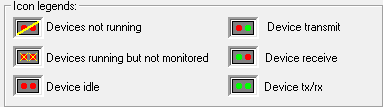

How to log the communication of a driver: when troubleshooting potential driver problems, it is essential to understand exactly how the specific device of an installed driver is communicating between
How to view the diagnostic counters of a driver's device: each driver installs a number of counters that provide important diagnostic information.
The Driver Monitor utility allows users to monitor the operation of all the devices of your installed protocol drivers and provides many diagnostic capabilities, such as the Datascope window, which displays the data that is being transmitted between the SCADA and the front-end device (typically a PLC), as follows:
 is selected, its description is displayed below
this list box, including the revision of the installed driver and the
Device name list box is filled
with all of its configured devices. For details on installing drivers, see Installing a Protocol Driver.
is selected, its description is displayed below
this list box, including the revision of the installed driver and the
Device name list box is filled
with all of its configured devices. For details on installing drivers, see Installing a Protocol Driver.Note: The Insert and Delete keys can be used to add and remove devices for the selected Driver.
has it's own icon which corresponds to the state
of the device to enable the user to see the current operational state of the device. The following explains the meaning of the various icons:

IMPORTANT: Please ensure that you have selected a device of the required driver BEFORE performing one of the following commands:
Either double click the required device or click the Monitor button to display the Monitoring Screens for this device, most notably providing the Datascope screen.
Tip: By launching the Options... and specifying Command line options you can automatically display and/or configure the screen that you always want to view by default, instead of always being presented with the option screen first.
Note: You can also delete devices from this list by selecting the unwanted device driver and pressing the DELETE key
Tip: You can turn off the default Always on top setting for this window, by right clicking the titlebar and unchecking this option.